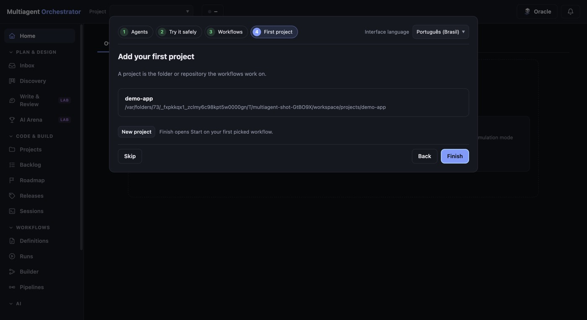
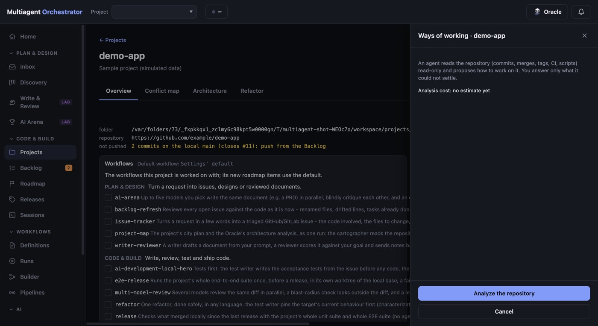
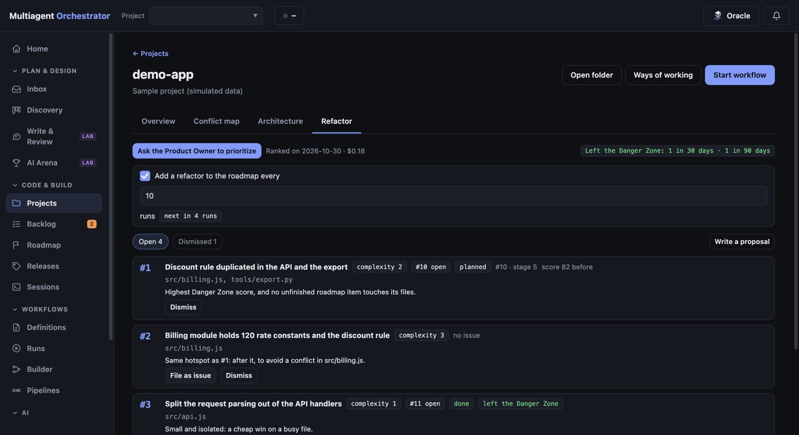

Primeiro Projeto
O cadastro do primeiro projeto é a primeira coisa que alguém faz no app. A proposta transforma o diálogo "New project" de hoje num assistente de quatro etapas: escolher, importar ou criar, analisar e escolher os fluxos, revisar. O clone e as análises rodam em segundo plano, e no fim o projeto já tem cidade, backlog de refatoração e três fluxos padrão: feature, fix e release (o hotfix é um modo do fix).
Recomendações em uma lista
- Um assistente, duas portas: o mesmo fluxo abre como último passo do Setup e em Projects › New project. O passo "Workflows" do Setup some, porque os fluxos passam a ser escolhidos por projeto.
- Etapa 1: dois cards grandes, "Create new project" e "Import a repository". GitHub e GitLab ficam juntos no mesmo card (o provedor sai da URL ou de um seletor); links menores para outra URL git e pasta local.
- Etapa 2: o repositório é validado com
git ls-remotee o clone começa em segundo plano assim que você avança. Uma bandeja mostra o progresso nas etapas seguintes. - Etapa 3: o perfil do Ways of working sai de graça da história do git; as análises com modelo (cidade + arquitetura, propostas de refatoração) vêm marcadas, com o custo somado na tela, e só rodam no clique.
- Formas de trabalho revisitadas: solo ou time sai do perfil (o fluxo é o mesmo). O eixo principal é Local (merge local e push no main) ou Local + remoto (PRs no GitHub/GitLab, acompanhados lá). CI vira um eixo à parte: nenhum, só na release (builds para macOS, Linux e Windows) ou nos PRs e na release.
- Fluxos sugeridos por regra, a partir do perfil (o
workflow-compose.jsdo #487 já faz quase tudo), cada um com o "porquê" e um seletor para trocar. - Workflows bundled: de 15 para 11 (os de Planning ficam para a próxima proposta), com os três padrão por projeto (
feature,fix,release; hotfix é o modo urgente do fix) e aliases para os nomes antigos. - Testes por tipo de trabalho: com suíte E2E, a feature escreve o E2E primeiro (como o local hero de hoje) e o fix implementa com unitário e roda o E2E depois. Sem E2E, os dois implementam e depois escrevem o unitário. A estratégia sai da análise (suíte E2E, ordem dos jobs no CI), e o assistente pergunta quando há E2E.
- Alinhado ao AI-native SDLC da Anthropic: o Code & Build cobre Build, Test e Deploy. No onboarding, o projeto escolhe o modelo de trabalho (Leve, Padrão ou Completo): quais artefatos (
intent.md,spec.md,plan.md,REVIEW.md) cada item gera. O markdown (fonte em inglês, tradução em português) é commitado no repositório, e um leitor renderiza. - Screenshots automáticos: a análise detecta como rodar o front do projeto, e o "Next steps" oferece priorizar um spike no roadmap do projeto para achar o jeito de capturar as telas em sandbox.
- Por último, um Monitor: um grupo novo no menu lê erros de produção (status 500, logs de erro) por polling, agrupa, e cada grupo novo vira um intent no Inbox com o diagnóstico; o fix só roda com o seu clique e para no gate.
- Nada vai para o roadmap sozinho: no fim, um cartão "Next steps" oferece adicionar refatorações escolhidas e capturar a primeira ideia.
Onde estamos hoje
Capturas reais do main com dados simulados (npm run screenshot). As peças para um bom onboarding já existem, mas estão espalhadas: o Setup só abre o diálogo genérico de projeto, e a análise, a cidade e a refatoração ficam escondidas em abas e botões da página do projeto, para descobrir depois.


createProject espera o git clone em <workspace>/repos/<owner>-<repo>).
project-ways-of-working.js. Lê commits, merges, tags, CI e scripts, monta o perfil e compõe intake + desenvolvimento + release a partir dos fragments.
settings.hiddenWorkflows.
project-map (o cartógrafo escreve o plano, regras validam, depois o Oracle analisa), tudo num run só.
O que a proposta reaproveita sem mudar: createProject e o manifesto .multiagent/project.yaml (#486), o seed ways-of-working e o caminho determinístico que ele já tem no modo simulado, workflow-compose.js e os fragments (#487), o project-map (#372, #381), o refactor:prioritize e o refactor:addToRoadmap (#357, #435), e os botões ▶ Install / ▶ Sign in do Setup.
Fluxo ponta a ponta
Do primeiro clique ao roadmap. Os passos com decisão têm cartões com opções, prós e contras e a recomendação em verde.
Entrada: onde o assistente abre
Hoje o Setup tem quatro passos e o último só abre o diálogo de projeto. A proposta deixa o Setup com Agents e Try it safely, e o terceiro passo passa a ser o assistente inteiro. O mesmo assistente abre em Projects › New project, no seletor de projeto do header e no Home vazio.
Onde vive o fluxo de cadastro
Um fluxo só para manter e testar; o primeiro projeto e o décimo passam pelo mesmo caminho.
Tira do Setup o passo Workflows, escolhido antes de existir projeto.
O Setup muda de forma (de 4 para 3 passos).
Mais simples na primeira vez.
O segundo projeto volta ao diálogo antigo; dois fluxos divergindo.
Menos código novo.
Uma tela só não comporta clone em fundo, análise e revisão sem virar um formulário enorme.
Recomendação: A. O diálogo atual fica só para Edit project.
Escolha: criar ou importar
Add a project
A project is the code the agents work on. You can change everything later.
- A git repository in your workspace
- Optionally a private GitHub repository
- Three questions pick its workflows
- Cloned into your workspace in the background
- Its history shows how you work today
- City and refactor backlog ready at the end
Other sources: Any git URL · A folder on this computer
Mock 1. Etapa 1 com os dois cards grandes. Textos da interface em inglês, como todo o app.
Quais origens aparecem
A escolha principal fica óbvia: criar ou importar.
GitHub e GitLab mudam pouco no app (gh ou glab, a mesma URL git): um card só, o provedor detectado pela URL, com um seletor GitHub | GitLab para a lista de repos.
Outra URL e pasta local seguem como links menores.
Os links menores podem passar despercebidos.
Tudo igualmente visível.
Dilui a decisão da primeira tela.
Cada marca visível.
Duas telas quase iguais para manter; três cards diluem a primeira escolha.
Importar: repositório e nome, clone em segundo plano
Você informa o repositório (URL ou owner/repo, do GitHub ou do GitLab, com a lista do gh repo list ou do glab repo list quando o CLI está logado; colar uma URL escolhe o provedor sozinho) e o nome do projeto, preenchido a partir do repo. Em Next o app valida o acesso com git ls-remote (um segundo) e começa o clone em segundo plano. Você já vai para a etapa 3.
Import a repository
GitHubGitLabgh signed in as eduardoglab not signed inWill be cloned into <workspace>/repos/acme-shop · main · 4,812 commits
Mock 2. Etapa 2. O número de commits vem do ls-remote + API, antes do clone.
Como o clone acontece
Nada novo.
Um repo grande prende a tela por minutos; o usuário não sabe o que está acontecendo.
O usuário escolhe análises e fluxos enquanto clona.
O projeto é criado como status: cloning; um erro aparece na bandeja com "Retry".
Um job novo no serviço, com estado e eventos.
--depth) e depois completarComeça mais rápido.
O Ways of working e a cidade precisam da história: raso quebra a evidência.
Recomendação: B com clone completo. Clone parcial sem blobs (--filter=blob:none) é uma otimização para depois, medida em repos grandes.
Sem gh, sem login ou sem acesso
Repo público: clona por HTTPS sem gh.
Repo privado sem acesso: o erro do ls-remote vira "Sign in to GitHub" ou "Sign in to GitLab" (o ▶ do Setup roda gh auth login no terminal), depois "Try again".
Sem gh: o card avisa que issues e PRs ficam indisponíveis, mas o import segue.
Um caminho de erro a mais para testar.
gh logado antes de tudoSimples.
Bloqueia repos públicos e quem trabalha só local.
Nenhum código novo.
O usuário descobre o problema minutos depois, na bandeja.
GitHub e GitLab, o mesmo caminho: o conserto oferecido segue o provedor da URL (gh auth login ou glab auth login), e o resto do fluxo não muda.
Criar novo: pasta, repositório e três perguntas
Sem código, não há o que analisar. O assistente cria o repositório e troca a análise por três perguntas, as mesmas que o Ways of working faz quando a história não responde.
Create new project
<workspace>/projects/field-notes
How will you work on it?
Change them any time in Ways of working. Setting up CI is offered as a next step.
Mock 3. O caminho "Create new project".
O que "Create new project" cria
Nada novo.
Sem git, os workflows (worktrees, merge local) não funcionam.
git init, README e .gitignore, primeiro commit em main.
"Also create a private repository on GitHub | GitLab" via gh repo create --private ou glab repo create --private, oferecido só com o CLI do provedor logado.
Criar repo remoto é uma ação para fora: precisa do clique explícito.
Projeto pronto para rodar.
Escolher stack é decisão de produto; melhor como o primeiro item do roadmap ("Scaffold the app"), feito pelo fluxo feature.
Análise e fluxos
Enquanto o clone roda, a etapa 3 mostra o que pode ser analisado e o custo de cada item. Os fluxos sugeridos aparecem à direita e se atualizam conforme os resultados chegam: primeiro com o perfil de graça, depois refinados pela análise com modelo.
Analyze Shop
Read-only. Nothing is written to the repository.
Suggested workflows
From how Shop is worked on today. Change any of them.
More workflows (refactor, backlog-refresh, writer-reviewer…) are always available in Start.
Mock 4. Etapa 3. O botão com o custo só aparece com análises com modelo marcadas; sem elas ele diz "Continue". No modo simulado tudo é simulado e custa $0.
Análise automática ou opcional
Zero cliques.
Gasta dinheiro sem pedir; o AGENTS.md pede custo explícito.
Clone, fatos e o perfil do git não custam nada e destravam a sugestão de fluxos.
"Skip, analyze later" deixa tudo para as abas Architecture e Refactor.
Um clique a mais que no A.
Cadastro instantâneo.
Perde o objetivo: terminar com cidade, backlog e fluxos sugeridos de verdade.
Ways of working com modelo: o seed já tem um caminho determinístico (é o que roda no modo simulado). A proposta usa esse caminho sempre e só chama o modelo para os campos que ficaram null, como o estilo de release sem tags claras.
O que roda junto com o clone
Nada lê o repo antes de o clone terminar; depois, perfil e project-map correm em paralelo, e o ranking da refatoração espera os achados.
Respeita os slots da máquina (#367).
Um orquestrador pequeno de jobs no serviço.
Aparece em Runs como qualquer run.
Um workflow para coisas que não são agentes (clone, fatos); mais pesado de mudar.
Recomendação: A no serviço, chamando o que já existe: createProject, architecture-facts, workflows:interview e o run do project-map, que continua aparecendo em Runs. Veja a linha do tempo.
Os eixos da forma de trabalho
Revisão do perfil do Ways of working (#487). Hoje ele tem time (solo ou time), merge (local ou PR), release, comandos, CI e linguagens.
Local: o run mescla na base local e o último passo do workflow faz push do main, sem PR remoto. O auto-push do projeto (o botão do Backlog) sai do app.
Local + remoto: o run abre o PR no GitHub/GitLab e acompanha por lá (revisão, CI quando roda no PR, merge).
CI: nenhum, só na release (ex.: builds para macOS, Linux e Windows ao criar a tag) ou nos PRs e na release. Cobre o caso do GitHub Free sem actions nos PRs.
Muda o modelo do perfil e o compose (fase 2).
Nada muda.
Solo e time rodam o mesmo fluxo; a pergunta não decide nada.
Uma pergunta a menos.
Errado para quem trabalha local e quer CI só na release.
Como o CI é lido: pelos gatilhos dos arquivos de CI (on: pull_request, on: push: tags, release no GitHub; rules / only: tags no GitLab). Sem CI, o assistente não escreve nada: oferece "Set up release CI" nos próximos passos.
A estratégia de testes de feature e fix
Hoje o ai-development-local-hero escreve os testes antes do código e serve tanto para feature quanto para fix.
Com E2E: a feature escreve os cenários E2E primeiro e implementa até passarem (o local hero de hoje); o fix implementa com unitário e roda o E2E depois.
Só unitário: feature e fix implementam e depois escrevem o unitário, o fluxo que muitas empresas usam.
A análise lê a suíte E2E e a ordem dos jobs no CI; com E2E, o assistente pergunta "Write the E2E tests first for features?" (padrão sim).
Duas variantes por fluxo para manter (as duas já existem hoje em workflows separados).
Um caminho só.
Estranho para fix e para quem trabalha no fluxo tradicional; sem E2E, o "teste primeiro" vira só unitário.
Familiar.
Perde o que funciona bem hoje para features com E2E.
Como a sugestão de fluxos sai da análise
O composeWorkflowSet do #487 já mapeia time, merge, release, comandos e linguagens para o conjunto.
Determinístico, testável, explica o porquê com a evidência do perfil.
Casos raros caem no padrão (e o usuário troca).
Flexível.
Caro, difícil de testar, e as escolhas são poucas.
Simples.
Ignora a análise que o dono quer usar.
| Campo do perfil | Afeta | Regra |
|---|---|---|
| mode: local | remote | feature, fix | local → merge na base local e, como último passo do workflow, push do main; remote → branch, PR no GitHub/GitLab, acompanhamento e merge por lá |
| release: milestone | per-merge | train | rc-stable | release, fix (modo hotfix) | com tags → o hotfix sai da última tag e vira patch; per-merge → sai de main |
| tests: unit | unit+e2e (e2eCommand) | feature, fix | unit+e2e → feature com E2E primeiro, fix com E2E depois; unit → os dois implementam e depois escrevem o unitário. Lido de configs (Playwright, Cypress…), scripts e2e e da ordem dos jobs no CI |
| testCommand, checkCommand | os três | vão nos prompts e nos passos de suíte; sem comando de teste, o feature avisa e usa "tests first" para criar a suíte |
| ci: none | release | pr+release | feature, release | pr+release → o feature remoto espera o CI do PR (o passo "watch CI" do pr-pipeline); release → a release faz push da tag, espera o run de CI e mostra os builds; none → só a suíte local, e "Set up release CI" aparece nos próximos passos |
| languages | os três | escolhem as skills *-js, *-python, *-go… |
O que roda em segundo plano
Exemplo de um repo médio importado. Verde é grátis (máquina), azul usa modelo real (só depois do clique), âmbar é o usuário preenchendo o assistente. Os tempos são ilustrativos.
O usuário pode concluir antes de tudo terminar: a revisão mostra "still analyzing" e a página do projeto se completa sozinha, com uma notificação quando a cidade e o backlog ficarem prontos.
Workflows: o conjunto padrão e a reorganização
Hoje são 15 workflows e 6 pipelines bundled. O dono usa na prática um só, o ai-development-local-hero (nome real do "AI Local Hero": testes primeiro, merge local, sem push). Existem três variações de desenvolvimento, dois de release e dois de análise que fazem quase a mesma coisa. A proposta: 11 workflows, com três padrão por projeto. Os workflows de Planning (writer-reviewer, ai-arena, issue-tracker) ficam como estão: serão reorganizados na próxima proposta, a do fluxo de escrita com revisão manual.
Quais fluxos todo projeto recebe
É o ciclo de vida do código: fazer, consertar, entregar; o hotfix é o fix urgente, que sai da última tag.
Separa o que hoje o local hero mistura (feature e fix no mesmo fluxo).
Bate com o fast lane de bug/hotfix do Discovery.
O fix é o único workflow novo.
Já implementado.
Sem caminho de urgência; o intake (issue) é melhor como ferramenta do Planning do que como fluxo do projeto.
ai-development-local-herotestes primeiro, merge localfeaturebasevariante E2E first (o padrão quando há suíte E2E), local ou remote; review simples ou multi-modelo. Hoje é usado também para fix: isso passa para o fixsoftware-development-local-heroimplementa sem testes primeiro, merge localfeature / fixvira variante"code first": implementa e depois escreve o unitário (o fluxo padrão de muitas empresas)software-developmentPR/MR, CI, preview, deploy, GitHub e GitLabfeaturevira variantevariante remote, a partir do fragment pr-pipelinemulti-model-reviewvários modelos revisam o mesmo difffeaturevira opção"review: multi-model"; também disponível sozinho pelo Start como modo de revisãofixnovoimplementa com unitário, roda o E2E depois (se houver), mescla; modo hotfix: sai da última tag e prepara o patchreleasesuíte inteira + E2E, Ship ou Holdreleasemantémestilos milestone / per-merge / train / rc-stable (fragment release-pipeline)e2e-releasesó a suíte E2E antes da releasereleasevira passoo passo E2E da releasewriter-reviewerum escritor, um revisorwriter-reviewermantémsem mudança agoraai-arenaaté 5 modelos escrevem e se criticamai-arenamantémsem mudança agoraissue-trackerpedido → issue triadaissue-trackermantémsem mudança agoraproject-mapcidade + análise de arquiteturaanalyze-projectunecidade, arquitetura e propostas de refatoração num run: é o que o onboarding chamarefactor-proposalspropostas depois de uma releaseanalyze-projectvira modo"since: last tag" (o pipeline release-then-refactors usa esse modo)refactoruma refatoração segurarefactormantémbacklog-refreshrevisa issues contra o códigobacklog-refreshmantémtest-batchtestes que faltam no que mescloutest-backfillrenomeiacandidato a virar passo opcional da release numa fase seguinterun-retrospectivemelhora skills e workflows a partir de um runretrospectiverenomeiaPipelines: de 6 para 5
| Hoje | Proposta |
|---|---|
issue-to-roadmap | mantém: issue → Product Owner coloca no roadmap |
enrich-save-develop | mantém; o passo de desenvolvimento passa a apontar para feature (pelo alias) |
rfc-to-issues | mantém (Planning, próxima proposta) |
release-then-refactors | mantém: release → analyze-project (since last tag) → roadmap |
ai-arena-write-review | mantém (Planning, próxima proposta) |
develop-to-retrospective | removido; o feature ganha "retrospective after" como opção |
Como renomear sem quebrar quem já usa
O nome antigo resolve para o novo com os inputs da variante (software-development → feature com mode: remote).
Manifestos, settings.hiddenWorkflows, itens do roadmap e o histórico de runs continuam funcionando.
A tabela de aliases fica por duas versões e depois sai.
Código limpo.
Quebra manifestos de repositórios e o roadmap salvo.
Nenhuma migração.
Não reduz nada que precisa ser mantido; só esconde.
Onde os fluxos do projeto ficam: por padrão o projeto só referencia as variantes bundled (no JSON do projeto, no workspace); nada é escrito no repositório no cadastro. "Customize" escreve em .multiagent/, como o "Write to the repository" do Ways of working faz hoje, sem commit.
Alinhamento com o AI-native SDLC da Anthropic
A Anthropic publicou em agosto de 2026 o AI-native SDLC playbook: seis etapas em loop, cada uma terminando num artefato versionado que uma pessoa aprova e que a etapa seguinte lê. O app já tem quase todas as peças; o que falta é tratar os documentos como artefatos de etapa, com formato e lugar definidos por projeto.
intent.mdproblema, resultado, afetados, restrições, perguntas · aprova: product ownerspec.mdrequisitos + design, pontos de atenção · aprova: product owner, tech lead se o risco é maiorplan.md + códigoarquivos, ordem, riscos, prova · aprova: engenheiro aceita o planoplan.md versionadoREVIEW.md + PRpolítica de revisão · aprova: code owner, release managercode-review, modo remote com PR, release com o gate do Ship e CI na releaseREVIEW.md por projetointent.mdincidente ou anomalia vira intent · triagem: service ownerO Code & Build cobre Build e Test inteiros, mais Deploy (a release com o Ship, o CI na release e o PR no modo remote). Plan e Design são o Plan & Design; o Maintain está espalhado entre Night watch, Refactor e o Oracle.
How work on Shop is documented
Each step leaves a file the next step reads, and a person approves it.
Where the files live
Written by the run, committed with its change, approved at its gate. The markdown and its reviewable page are both committed, so the history stays in the repository.
Mock 5. O modelo de trabalho do projeto, na etapa 3. Fix fica leve por padrão; feature segue o Padrão.
Modelo de trabalho por projeto
O projeto escolhe no onboarding; feature usa Padrão, fix usa Leve, e cada item pode subir de nível.
Os gates que o app já tem passam a aprovar artefatos: o commit do Discovery aprova o intent e o spec, o gate do desenvolvedor aprova o plano.
Mais uma escolha no onboarding (com padrão pronto).
Fiel ao playbook.
Pesado para fix e projetos pequenos; vira burocracia.
Nada novo.
Os documentos continuam soltos (issue, card, brief), sem o loop que o dono quer.
Onde os artefatos ficam
A fonte em inglês (intent.md) com a tradução em português ao lado (intent.pt-BR.md) e as imagens, em docs/work/<item>/, versionados com a mudança.
Nenhum HTML commitado: um leitor renderiza o markdown na hora, com tema, export to PDF e uma página inicial com os itens; editar um markdown no Maintain não exige regenerar nada.
São dados da feature e da issue, não do workspace do usuário.
O leitor precisa de JavaScript e de um servidor (o do engine) para abrir os arquivos.
Repo menor.
Perde o histórico da página revisada e o front de navegação.
Não toca o repositório.
Some para quem clona; agentes de fora não leem.
Escopo: esta proposta só registra a escolha no onboarding e o caminho padrão (docs/work/<item>/, markdown + HTML + imagens). Gerar e revisar os documentos é o fluxo de write doc; o front que navega pelos intents fica para depois. O run escreve e commita esses arquivos com o gate de sempre; o onboarding nunca escreve no repositório.
Revisão e conclusão
Um resumo de uma tela: o perfil, os três fluxos escolhidos, a cidade (miniatura, com "Open the city") e o topo do backlog de refatoração. O que ainda está rodando aparece como tal. Finish funciona a qualquer momento.
fix unit, then E2E
release milestone
Mock 6. A revisão. O ranking do PO ainda roda e preenche a lista sozinho.
A revisão espera as análises?
Finish a qualquer momento; o que falta chega na página do projeto, com notificação.
A primeira visita à cidade pode estar vazia por alguns minutos.
A revisão é sempre completa.
Prende o usuário minutos olhando uma barra.
Depois: o que vai para o roadmap
O assistente fecha na página do projeto com um cartão "Next steps". O usuário escolhe. Nada começa a rodar por conta própria, e os gates humanos dos fluxos continuam onde estão.
Shop
A line in the Inbox; Discovery shapes it into issues.
Open InboxAdd a refactor to the roadmap every 10 runs.
Turn onBuilds for macOS, Linux and Windows when you tag a release. A feature run writes the workflow.
Add to roadmapA spike finds how to run Shop's front in a sandbox and capture its screens (Storybook found). Its findings propose the setup.
Add spike to roadmapMock 7. O cartão "Next steps" na página do projeto, depois do Finish. "Investigate screenshots" prioriza um spike no roadmap do projeto.
Como o projeto chega ao roadmap
Reaproveita refactor:file + refactor:addToRoadmap (#357, #435) e a cadência.
Nada começa sem clique; o roadmap continua parado até Start.
Mais um cartão na página do projeto (some quando dispensado).
Projeto "pronto para a noite".
Custo e decisões sem o dono; vai contra "o usuário decide o que vai para o roadmap".
Screenshots automáticos do projeto
Quem escreve o plan, o write e o review muitas vezes não é técnico: clona o repositório, mas configurar a aplicação para rodar é doloroso, e acaba tirando screenshot na mão. Neste app isso já funciona (npm run screenshot e o passo screenshots dos workflows); a ideia é oferecer o mesmo para o projeto que está sendo cadastrado, começando por um spike no projeto do usuário.
Como o projeto ganha screenshots automáticos
A etapa 3 já detecta sinais (Storybook, Playwright, mocks, o comando de run do Local preview); o cartão "Investigate screenshots" coloca um spike no roadmap do projeto, se o usuário quiser.
O spike roda no projeto, só-leitura mais tentativas em sandbox (dados de exemplo, sem rede, sem segredos reais): tenta a captura genérica pelo Local preview e avalia um harness no contrato screenshot do app.
O resultado é um documento de achados (no modelo de trabalho do projeto) e uma proposta de item "Set up screenshots", que o usuário aprova como qualquer item.
Um run a mais antes da captura automática existir no projeto.
Mais rápido quando dá certo.
Escreve código no projeto sem saber se o caminho funciona; caro quando falha.
Nada muda no repositório.
Quebra com login, dados vazios e APIs externas.
Enquanto isso: no fluxo de write doc, o dono pode colar ou anexar screenshots no chat das iterações (o mecanismo de imagens coladas do #130), e o writer usa o comando de screenshot do projeto quando ele existir.
Monitor: erros de produção viram intents
A última peça do loop do SDLC (o Maintain): o app passa a ouvir os erros do projeto rodando, como respostas 500 e logs de erro, agrupa o que se repete e propõe um fix. Hoje o app não tem esse tipo de monitor; ele entra como um grupo novo do menu, Monitor, junto do Night watch. É a última fase do plano.
Errors
Production errors of Shop, grouped. A new group gets a diagnosis and becomes an intent in the Inbox; a fix run starts only when you say so.
Automation: diagnose new groups (Ask me) · fix runs (Off) · at most 5 diagnoses a day · daily budget
Mock 8. Monitor › Errors. Cada grupo de erro novo vira um intent no Inbox; "Propose fix" começa um run do fluxo fix, que para no gate de sempre.
Como os erros chegam ao app
O app busca, de tempos em tempos: Sentry, Datadog, CloudWatch, GCP Logging ou uma URL / arquivo de log com filtro (status 500, nível error).
Só conexões de saída: funciona no .exe, sem expor nada.
Atraso de alguns minutos; um conector por fonte.
Na hora.
Precisa de uma URL pública para o desktop: só pelo servidor do engine, e depois da revisão de segurança (#466–#470).
Flexível.
Caro e imprevisível para algo que um filtro resolve; o modelo entra só no diagnóstico.
Recomendação: A, com o agrupamento (rota + mensagem + arquivo:linha) e a deduplicação feitos sem modelo. Os tokens das fontes ficam no cofre do sistema (o safeStorage do Electron), nunca em arquivo do workspace. Webhook vem depois, pelo servidor do engine.
O que acontece com um erro novo
Um turno só-leitura do Oracle cruza o stack trace com o código e escreve o diagnóstico como intent.md num card do Inbox (o Maintain do playbook).
"Propose fix" começa o fluxo fix, que para no gate humano como qualquer run.
Modos Ask me / On / Off, como as automações das colunas do Discovery (#259), com teto diário.
Um card por grupo novo: o teto e a deduplicação evitam enxurrada.
Mais rápido.
Atravessaria o gate humano: proibido pelo AGENTS.md.
Barato.
Não fecha o loop; vira mais um dashboard.
Custos de chamadas reais
Ordem de grandeza, sem medição. Todo o desenvolvimento roda no provedor simulado (MULTIAGENT_SIMULATION_ONLY=1), sem custo. O assistente mostra o total antes do clique e conta no orçamento diário (#206).
| Item | Quando | Modelo | Estimativa |
|---|---|---|---|
| Validar acesso, clonar, fatos | sempre | nenhum | $0 |
| Perfil do Ways of working pelo git | sempre | nenhum | $0 |
| Ways of working: campos que o git não responde | só quando algum ficou null | Oracle | $0.05–0.30 |
| Cidade: plano do cartógrafo | marcado por padrão | padrão do workflow | $0.30–1.00 |
| Análise de arquitetura (achados) | junto da cidade | Oracle | ~$0.50 |
| Ranking da refatoração pelo PO | marcado por padrão | padrão do PO | $0.10–0.30 |
| Monitor: polling, agrupamento, deduplicação | a cada poucos minutos | nenhum | $0 |
| Monitor: diagnóstico de um grupo de erro novo | Ask me por padrão, até 5 por dia | Oracle | $0.10–0.50 |
| Create new project (com ou sem GitHub) | caminho 2b | nenhum | $0 |
Um import típico com tudo marcado fica em torno de $1–2. A análise de arquitetura (~$0.50) é a estimativa que o próprio app mostra no pipeline release-then-refactors; os outros valores são chutes a confirmar no primeiro run real, avisado antes.
Plano faseado
Assistente com o que já existe
- O assistente de 4 etapas (Setup e Projects), com os cards de origem.
- Import do GitHub ou do GitLab no mesmo card, com validação (
ls-remote), clone em segundo plano e a bandeja de progresso. - Etapa 3 com perfil grátis +
project-map+ ranking da refatoração, mostrando o custo. - Sugestão dos fluxos de hoje (local hero / software-development / release) pelas regras do compose.
- Revisão não bloqueante e o cartão "Next steps".
- Setup sem o passo Workflows.
Pronto quando: do Home vazio ao projeto com cidade, backlog e fluxos, tudo no simulado, com os erros de acesso cobertos.
O conjunto feature / fix / release
- Workflow
fixnovo (fragmentfix-pipeline), com o modo hotfix. featurecom as variantes local / remote, E2E first / code first e as opções.releasecom o passo E2E e a espera pelo CI da release quando ele existe.- Remover o auto-push do projeto e pôr o passo "push main" no fim de feature e fix no modo Local (fecha o #617).
- Ways of working revisitado:
teamsai do perfil,mergeviramode: local | remote,civiranone | release | pr+releaselido dos gatilhos dos workflows de CI. - Aliases para os nomes antigos; o compose do #487 passa a gerar feature/fix/release.
Pronto quando: um projeto antigo, com manifesto e roadmap salvos, roda igual pelos nomes novos.
Reorganizar o resto
analyze-project,test-backfill,retrospective.- Pipelines de 6 para 5.
- Docs e README de workflows reescritos.
Pronto quando: 11 workflows bundled e a suíte inteira verde.
Criar novo e outras origens
- "Create new project" com
git inite remoto opcional no GitHub ou no GitLab (gh/glab repo create). - Clone parcial para repos grandes, se as medições pedirem.
Pronto quando: um projeto novo nasce com repo local e remoto e roda o primeiro feature.
O loop do SDLC
- O modelo de trabalho do onboarding passa a valer: intent e spec no Discovery (formato do write doc),
plan.mdno lugar do brief do desenvolvedor, tudo commitado emdocs/work/<item>/. REVIEW.mdpor projeto lido pelo review.- Achados do Night watch e do analyze-project entram como intent no Inbox.
- Evals de skills e workflows no CI; um front para navegar pelos intents.
Pronto quando: um item vai de intent a release com os artefatos no repo, e um achado do Night watch volta como intent.
Monitor
- Grupo novo no menu, Monitor: Errors e Night watch.
- Conectores de polling (Sentry, Datadog, CloudWatch, GCP, URL/arquivo de log) com os tokens no cofre do sistema.
- Agrupamento e deduplicação sem modelo; diagnóstico vira
intent.mdno Inbox. - "Propose fix" começa o fluxo
fix; modos Ask me / On / Off com teto diário. - Webhook pelo servidor do engine, depois da revisão de segurança.
Pronto quando: um 500 simulado vira um card no Inbox com o diagnóstico, e o fix proposto para no gate.
Arquivos e áreas que mudam
verde = novo, âmbar = alterado.
fronts/build/views/projects/project-wizard.js · .css
packages/shared/onboarding-model.js (etapas, regras, soma de custo)
fronts/build/views/projects/projects.js (New project abre o assistente)
packages/ui-kit/setup.js (3 passos; o último é o assistente)
packages/shared/setup-model.js
fronts/analyser/views/project/project.js (cartão Next steps)
packages/shared/i18n/*
Serviço e domínio
packages/engine/service/areas/project-onboarding.js (jobs: clone → fatos → análises)
packages/engine/service/channels/onboarding.js
packages/engine/domains/project/projects.js (clone em fundo, status, git init, gh/glab repo create; sai o
autoPush)packages/engine/service/areas/local-push.js, fronts/build/views/backlog/backlog.js (sai o auto-push; o Push manual fica)
packages/engine/service/areas/workflow-interview.js (perfil grátis + modelo só nos nulls)
seeds/ways-of-working/seed.md (perfil: mode e ci, sem team)
workflows/feature.yaml · fix.yaml · analyze-project.yaml
fragments/fix-pipeline.yaml
packages/engine/domains/workflow/workflow-compose.js (feature/fix/release)
o carregador de workflows (tabela de aliases)
workflows/release.yaml, pipelines/*.yaml
Testes, telas e docs
scripts/screenshot/views/onboarding.js
fronts/monitor/ (front novo: views/errors, engine/domains/error-sources, conectores)
packages/ui-kit/nav-groups.js (grupo Monitor)
packages/shared/work-model.js (Leve / Padrão / Completo, caminhos dos artefatos)
features/onboarding.feature
scripts/screenshot/views/setup.js
docs/readme/040-workflows.md, docs/agents/engine.md
docs/agents/decisions.md (depois das decisões)
Perguntas em aberto, com o padrão recomendado
Padrão: sim. Os fluxos passam a ser escolhidos por projeto; Definitions continua para quem quer esconder workflows.
gh ou glab?Padrão: oferecer "Sign in" do provedor da URL no Next (o ▶ do Setup roda gh auth login ou glab auth login); um git credential helper que já funcione também vale.
Padrão: não. Os fluxos ficam referenciados no workspace; "Customize" escreve em .multiagent/ sem commit.
Padrão: sim, com o total visível e "Skip, analyze later". No modo simulado tudo é simulado.
Padrão: só com o gh ou o glab logado, privado, e a caixa vem desmarcada na primeira vez.
Padrão: duas versões, com aviso no Start e uma linha nas notas de release.
Padrão: um projeto por repositório por enquanto; subpasta fica para depois.
Padrão: da última tag quando a release usa tags; senão de main.
Padrão: não. Só o cartão "Next steps".
Decidido pelo dono: sim, como último passo do workflow, depois do merge no main. O auto-push do projeto (o botão do Backlog e o push depois de cada merge: local) sai do app. Isso também acaba com a corrida entre o Ship e o auto-push (#617): cada workflow faz o próprio push. Se o push for recusado porque o origin andou, o passo atualiza o main e tenta de novo, e um conflito volta para o desenvolvedor do run, como o push manual faz hoje.
Padrão: não. "Set up release CI" vira um item do roadmap, feito pelo fluxo feature com as skills ci-pipeline-gh / ci-pipeline-gl, com gate e revisão como qualquer mudança.
Padrão: Standard para feature, Light para fix; Full só quando o projeto já tem CI e quer evals.
Padrão: docs/work/<item>/ (markdown, HTML e imagens), configurável; o Ways of working detecta uma pasta já usada (docs/rfcs, adr/).
Padrão: Sentry e uma URL/arquivo de log com filtro; Datadog, CloudWatch e GCP depois, conforme a demanda.
Padrão: Ask me, com teto de 5 diagnósticos por dia; fix runs desligados até você ligar.
Padrão: só quando o projeto tem front e ainda não tem comando de screenshot; com Storybook ou Playwright, o cartão diz o que encontrou.
Como a proposta respeita as regras do AGENTS.md
- App em inglês: o assistente, os workflows e as skills em inglês; o que os agentes escrevem segue Settings › Language.
- O workspace é o produto: clones em
<workspace>/repos/, projetos novos em<workspace>/projects/, análises em<workspace>/architecture/. - Agentes sem supervisão: as análises registram suposições; quem responde às três perguntas é o usuário, no assistente.
- Gates humanos intocados: o onboarding não começa run de desenvolvimento nem responde gate; o roadmap só recebe o que o usuário escolhe.
- Ações para fora com clique: criar repo no GitHub e logar no
ghsó com clique explícito. - Checagens só simuladas: o assistente é testado com
npm run screenshote o provedor mock. - Custo explícito: total antes do clique, orçamento diário.
- Listas compartilhadas: o novo conjunto de workflows entra pelo header de cada arquivo e pelos docs gerados, não por listas editadas à mão.